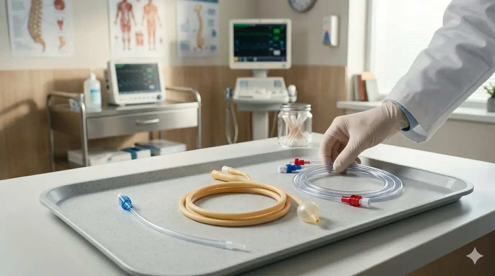

Εντερική Σίτιση

Σίτιση με Σωλήνα Levin στο Σπίτι: Ασφαλής Κατ' Οίκον Φροντίδα από Νοσηλευτές
Μάθετε πώς γίνεται η σίτιση με ρινογαστρικό σωλήνα (Levin) στο σπίτι από έμπειρους νοσηλευτές. Ασφαλής εντερική διατροφή χρονίως ασθενών και ηλικιωμένων στη Θεσσαλονίκη.
Διαβάστε Περισσότερα